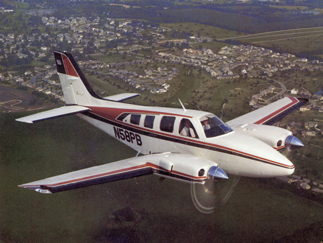

Cessna 172 Skyhawk

Le Cessna Skyhawk 172 est l'avion monomoteur le plus populaire jamais construit.
Avec des caractéristiques de vol tolérantes, une très bonne visibilité,
l'option d'avoir des avioniques sophistiqué avec le modèle G1000,
le
Cessna Skyhawk est l'avion le plus populaire pour la formation au pilotage et est parfaitement adapté aux élèves pilotes.
| Vitesse de croisière | Altitude maximale | Endurance | Portée |
|---|---|---|---|
| 124 KTAS | 14,000 pi | 7 Hr | 3,500 NM |
Beechcraft Baron G58
Autonomie: 7 heures Portée: 1480 miles nautiques Vitesse de croisière: 325 km / h Altitude maximale:
Cessna 172
Autonomie: 1185 km Vitesse maximale: 302 km / h Vitesse de croisière: 226 km / h Type de moteur: Continental O-300
Cessna 172
Autonomie: 1185 km Vitesse maximale: 302 km / h Vitesse de croisière: 226 km / h Type de moteur: Continental O-300